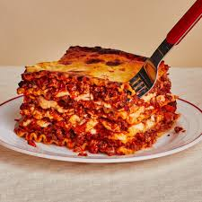

Lasagna

Description
This classic lasagna recipe features layers of rich meat sauce, tender noodles, and a creamy cheese filling. Perfect for family dinners or meal prep!
Ingredients
- 9 lasagna noodles
- 1 pound ground beef
- 1 jar (24 oz) marinara sauce
- 1 container (15 oz) ricotta cheese
- 1 egg
- 2 cups shredded mozzarella cheese
- ½ cup grated Parmesan cheese
- Salt and pepper to taste
Steps
- Preheat oven to 375°F (190°C). Cook noodles according to package instructions.
- In a skillet, cook ground beef until browned. Add marinara sauce and simmer for 10 minutes.
- In a bowl, mix ricotta, egg, salt, and pepper.
- In a baking dish, layer noodles, meat sauce, ricotta mixture, and mozzarella. Repeat layers and finish with Parmesan on top.
- Cover with foil and bake for 25 minutes. Remove foil and bake an additional 10–15 minutes until bubbly.
- Let it rest 10 minutes before serving. Enjoy!
Home